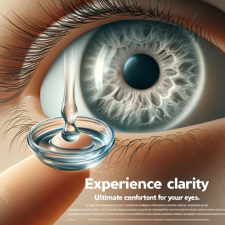
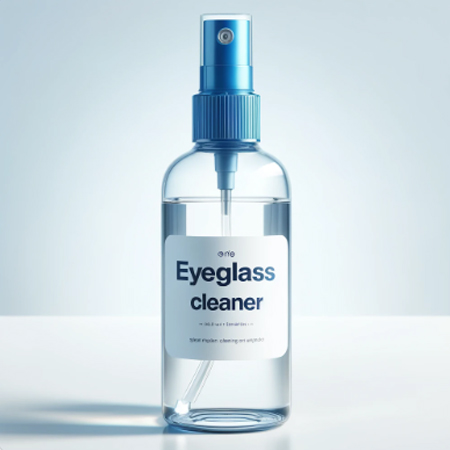

Productos
Anteojos de Sol: Protegé tus ojos con estilo.
Anteojos Recetados: Lentes personalizados para mejorar tu visión.
Anteojos de todas las Marcas: Encontrá las mejores marcas nacionales e internacionales.

Lentes de Contacto: Soluciones cómodas y prácticas para tu visión.
Líquidos para Conservar Lentes de Contacto: Mantené tus lentes en perfectas condiciones.

Líquido para limpiar anteojos: Productos especializados para mantener tus lentes impecables.
Sujetadores y Repuestos para anteojos: Accesorios y repuestos para tus anteojos.